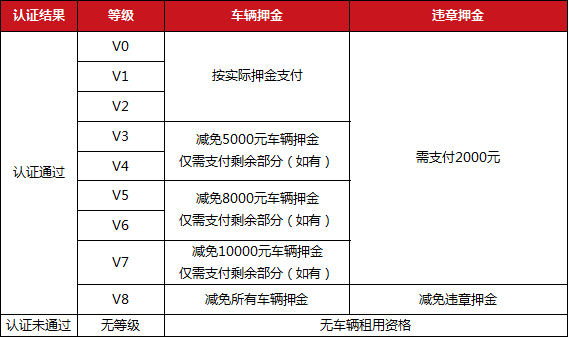
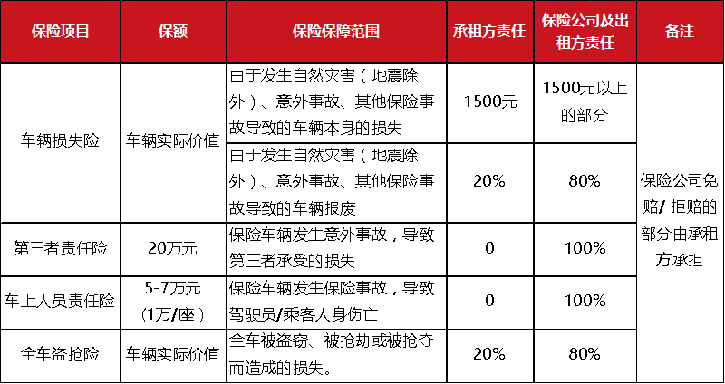
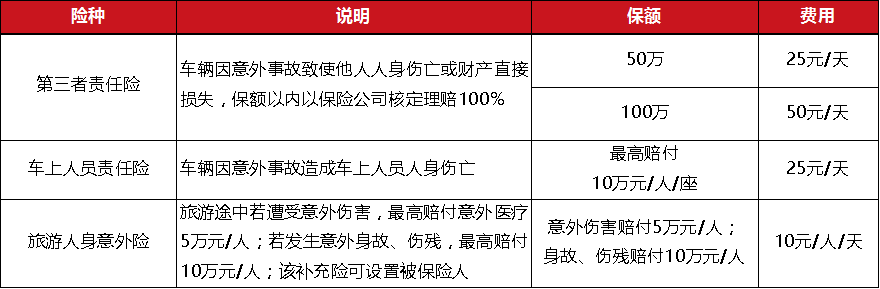

-
 手机端
手机端
-
 微信
微信
- 快速注册
- 登录
- 我的悟空
- 帮助中心
- 400-0515-507
手机端
微信
首先，悟空租车欢迎并感谢您的仔细阅读和确认《悟空租车用车服务协议》（以下称“本协议”）。以下条文标红的字段，是我们认为对您的权益极为重要的部分，尚请您务必加以重视。
本协议之条款及规定由北京悟空出行科技有限公司（以下称“悟空租车”，即“平台方”）、出租方、承租方共同达成，对各方均具有法律约束力。
业务过程中出租方及承租方之间的权利和义务由本协议之条款及规定予以规范。
1.1 以任何方式进入或使用悟空租车的服务或平台，包括但不限于网站（域名为wkzuche.com）、手机客户端软件（名称为“悟空租车”）、微信公众号等，即表示您已充分阅读、理解并同意接受本协议的条款、规则、规定和条件（以下合称“条款”）。
1.2 本协议所有条款，是为了提供车辆租赁服务的基本规则，其他所有悟空租车已经发布或将来可能发布的各类规则，则为本协议的补充部分。上述的所有规则为本协议不可分割的一部分，与本协议正文具有同等法律效力。
1.3 悟空租车有权在必要时增加或修改本协议条款（以下合称“条款变更”）。基于互联网业务的特性，悟空租车无义务就每次条款变更向每一位平台用户进行逐一通知，悟空租车将变更后的协议条款在悟空租车平台进行公告即完成了向平台用户的告知，变更后的协议条款在公告之日或公告指定日期开始生效。平台用户有义务在进入平台服务页面时，不时查阅最新版本的协议条款。
1.4 变更后的协议条款生效后，如平台用户继续使用悟空租车的软件平台或服务，即视为平台用户已接受变更后的协议。如果平台用户不接受变更后的协议，应当停止使用悟空租车的软件平台或服务。
2.1 平台用户分为两种，即为车辆出租方（本协议中称“出租方”）和车辆承租方（本协议中称“承租方”或“客户”）。
2.2 出租方是指与悟空租车以及悟空租车旗下出行品牌签署加盟合作协议的汽车租赁公司，出租方为通过悟空平台审核的合法公司，其依照规定为承租方提供车辆及服务。
2.3 承租方是指通过悟空平台或与悟空平台合作的第三方平台预订车辆的客户，承租方、需提供真实、正确、有效且符合标准的身份信息并完成悟空平台实名认证，认证通过后方可租用平台上出租方的车辆。
3.1 悟空平台及与悟空平台合作的第三方平台所披露的车辆，均为出租方上传至悟空平台并经由悟空平台审核后对外披露。
3.2 出租人具备出租车辆的所有权或车辆合法授权。
3.3 车辆满足：
(1)车况良好，满足基本的安全要求或能提供安全驾驶保障,并符合中国道路法规要求；
(2)车辆清洁、符合“车辆运营标准”，交车时油量不低于1/4；
(3)车辆车龄不超过法定车辆报废年限，且不得为事故车，泡水车，亦或火烧车等车辆品质存在隐患的情况。
3.4 出租人为车辆购买交通事故责任强制保险，以及车辆损失险、第三者责任险、车辆人员责任险。
4.1 注册规则
4.1.1 任何具备大陆合法有效手机号的自然人，在通过平台用户注册程序后，均可注册为平台的客户。
4.1.2 与悟空平台合作的第三方平台的客户，在通过第三方平台与悟空平台产生汽车租赁关系后，将自动注册为悟空平台客户，账号与第三方平台账号一致（即为手机号）。
4.2 实名认证
4.2.1 平台客户注册后，需要通过系统上传身份证、驾驶证信息及证照，称为客户的实名认证。
4.2.2 平台客户证件满足：
(1)大陆有效二代身份证；
(2)有效期超过半年的地方驾驶证，其所示的身份证号须与身份证上所示一致，须正本及副本完整；
4.2.3 证件信息及照片上传标准：
(1)上传的证件号码确保真实、正确、有效；
(2)上传的证照为证件正面（驾驶证照片需包含副本），完整无缺失、无反光、图片清晰可辨、重要信息可考。
4.2.4申请注册为“悟空租车”平台会员的申请人同意授权脚印兄弟（北京）信息科技有限责任公司及其子公司北京悟空出行科技有限公司与合作的征信机构采集其个人信息，包括但不限于申请人的收入、存款、银行卡、有价证券、商业保险、不动产的信息和纳税数额信息，平台客户了解征信机构及其他第三方机构采集个人信息可能导致征信机构了解其个人资产和负债状况、消费和支出类型和个人消费行为习惯等个人隐私信息。申请人已被明确告知提供上述信息可能会给本人带来财产或信用损失，以及其他可能的不利后果，包括但不限于：采集这些信息对本人的信用评级（评分）、信用报告等结果可能产生的不利影响，以及该等信息被信息使用者依法提供给第三方后被他人不当利用的风险，但本人仍然同意授权依法成立的征信机构采集这些信息。申请人了解授权脚印兄弟（北京）信息科技有限责任公司及其子公司北京悟空出行科技有限公司采集或查询其个人信息用于风险控制。申请人同意授权拥有本人不良信息的信息提供者可以向依法成立的征信机构提供本人的不良信息，且不再另行告知本人。
4.2.5 悟空租车承诺保护平台用户信息安全，未经平台用户明确同意，不将平台用户信息用于本服务目的之外的行为，不向悟空租车关联企业之外的第三方转让、出售、泄露、透露承租方信息；此不包含特殊情况下政府和司法机关的要求，此种情况下，悟空租车将在第一时间通知当事人。
4.2.6实名认证结果将于平台客户上传信息后10分钟内得出，认证结果有通过及未通过，其中认证未通过客户将无法租用车辆；认证未通过可重复实名认证程序。
4.2.7 认证通过的平台客户将获得V0—V8的等级，并获得相关特权，如下：

5.1 车辆预订
5.1.1 平台客户通过悟空平台的手机客户端、平台网页、手机微信端或第三方平台的预订渠道选择出租方网点以及车辆并提交订单，并确认订单信息准确无误。
5.1.2 提交订单后，需于45分钟内，预付订单款项，否则订单会自动取消。
5.1.3 平台客户最多可预订租期不重合的两个订单。
5.1.4 成功预付订单款项后，视为承租方与出租方之间的交易“确认”，订单协议有效成立，该汽车租赁订单将同时对承租方和出租人产生法律约束力。
5.1.5 交易“确认”后，出租方即不可拒绝或取消订单，否则视为违约。
5.1.6 若客户通过与悟空租车合作的第三方电商平台预订车辆，并完成预付全款后，悟空平台有权使用客户手机号代客户通过悟空平台下订单，订单信息与客户第三方预订信息一致，并由出租方借由悟空平台受理订单。
5.2 订单修改
5.2.1 于取车前修改租期、修改取/还车地点、替换车型、修改可选服务，需要在预订取车时间前2小时以上向客服中心提出申请，否则不保证订单予以修改。
5.2.2 修改订单申请的通过与否，视门店车辆调配情况而定。
5.2.3 订单修改后，将重新计算车辆租金、保险价格、其他业务服务费用。
5.3 取消订单
5.3.1 承租方取消订单
(1)取车前2小时（含）内或取车时间以后，因客户原因取消订单，客户需承担订单首日租金作为违约金，违约金最高不超过150元（亦不超过订单总金额）。
(2)承租方于预订取车时间2小时以前取消订单的，不用承担费用；
(3)通过第三方平台预订车辆，以第三方平台规则为准；
(4)节假日订单及活动订单，以披露出的规则为准。
5.3.2 出租方取消订单
(1)承租方成功预订后，出租方因自身原因取消订单，则视为出租方违约，需致歉客户并在悟空平台调解下给予客户一定补偿；
(2)通过第三方平台预订车辆，则出租方的取消订单规则以第三方平台规则为准；
(3)节假日订单及活动订单，以披露出的规则为准。
注：平台不对任何由于出租方或承租方单方或双方的原因，导致的预订订单无法履行情况承担责任。
6.1 承租方选择所租车辆并预付订单费用后，将收到出租方的联络方式，同时出租方也会收到承租方的联系方式，双方应提前联系确认订单信息。
6.2 取车时间；
(1)出租方和承租方必须按订单预订时所规定的时间和地点交接车辆；
(2)承租方未在预订取车时间取车的，租期按实际的取车时间起算。
6.3 出租方必须确保所提供的车辆完全符合租赁车辆资格标准，并且车况符合向平台系统提交的车况信息记录；承租方决定开始驾驶前，必须负责检查车辆的（内部和外部）状况，车辆适合驾驶的基本安全要求，包含但不限于：
(1)当汽车启动后，所有警告灯都自动熄灭；
(2)车辆没有液体泄露的迹象；
(3)除轮胎以外，汽车的其他部件都没有接触地面；
(4)挡风玻璃和车窗没有裂痕和缺口；
(5)所有的仪表盘、保险杠、车镜、车身都必须完好无损；
(6)前后车灯都完好无损；
(7)轮胎胎面至少2mm厚，轮胎没有变形或损毁；
(8)其他承租方认为必要的安全检查；
(9)证件准确：行驶证，保险单（交强险、商业险）；
(10)必要的附属物品：机轮千斤顶，备胎，车轮防盗螺母等；
(11)汽车油量大于或者等于油箱容积的1/4。
6.4 承租方必须携带身份证、驾驶证、本人信用卡、“承诺协议书”（限校园业务）供出租方核查，承租方个人身体条件必须符合汽车驾驶要求，若出租方发现承租方取车时携带证件不全或身体条件不符合要求，则有权取消订单，并不承担违约责任。
6.5 承租方在取车时发现车辆存在不符合第【6.3】条列明的安全要求时，应将问题记录在车况记录（线上电子验车单或线下纸质验车单）中，如承租方以车辆不适合使用为由取消订单，并不承担违约责任。
6.6 若承租方在取车时发现车况有不符合第【6.3】条列明的安全要求时，仍然选择驾驶出行，则导致出现任何的人身、财产损害，由承租方自行承担。
6.7 车辆交予承租方之前，承租方需完成缴纳车辆押金环节，可通过线上支付押金至平台，或于门店线下支付押金；承租方可选押金支付方式，出租方不可干涉承租方选择。
6.8 承租方未按规定支付车辆押金，则出租方有权不交车予承租方。
6.9 如果出租方有合理理由认为承租方不适宜开车、不具备驾车资格、承租方似乎有意以违反协议的方式使用车辆，或者不符合安全要求情况下，出租方有权拒绝承租方取得车辆使用权，取消订单，但应立即通知悟空租车并提供证明文件。
6.10 承租方不得携带宠物用车，如若取车时承租方携带宠物，则出租方可不交车予承租方。
6.11 承租方严禁携带国家违禁药品、枪支弹药、管制刀具等危险品租赁车辆，否则出租方有权不交车予承租方并追究其法律责任。
7.1 租期规则
7.1.1 平台最短租期为1小时（各出租方有所不同），最长租期为30天。
7.1.2 租期计算方式：
(1)出租方可自行设置车辆的日租金及时租金，其中时租金必然小于日租金；
(2)租期中非整日部分的小时数，不满1小时的，超过30分钟则视为1小时；不到30分钟（含）的不计入租期；
(3)当租期中非整日部分的小时数×时租金>日租金，则租期中非整日部分按日租金计费。
7.1.3 出租方、承租方均同意遵守上述租期计算规则，同意并认可由悟空租车根据租期计算的相关租车费用。
7.2 用车禁行区域
受限于各省市法律法规，悟空租车短租车辆在部分区域有禁行限制，如您执意驶入禁行区域，则由此产生的相关损失由您自行承担，且出租方有权按规则收取费用：
(1)部分租赁车辆不允许进入泸沽湖景区，以取车门店所告知的规则为准，如接到告知后执意进藏，则由此产生的相关损失由您自行承担。
(2)取车地点在海南省内，租赁车辆禁止驶出海南省，如车辆驶出海南省则出租方有权强制收回车辆，造成的相关费用由承租方承担。
(3)部分租赁车辆不允许进藏，以取车门店所告知的规则为准，如接到告知后执意进藏，则您需承担包括车辆被扣在内的相关损失，并承担可能产生的超里程费。
7.3 用车中的订单修改
7.3.1 延期还车
如果出租方在租期结束后延期归还车辆，延期1小时以内还车的，无需提前办理手续，延期用车时间将计入总租期，承租方需在还车时根据总租期支付相应费用；
7.3.2 续租
延期1小时以上还车的，视为续租，需在租期届满前提前2个工作小时提出续租申请，续租成功与否视车辆调配情况而定；
a)续租后单次总租期（已租+续租）不超过30天（含）；
b)同一订单续租次数（取车后续租次数）仅限2次；
7.3.3 强行续租
超过预订还车时间，而承租方如因个人原因未履行有效续租手续强行不还车的，视为强行续租。未履行有效续租手续是指：
• 未提前告知且延期还车1小时以上的；
• 未经出租方同意强行不还车的；
• 到预订还车时间无法与承租方联系上的。
满足任一以上情况，则出租方有权立即收回车辆，出租方可以委托悟空租车及其关联公司代为收回车辆。承租方除支付正常租车费用外，
还需按超期部分租金的300%支付违约金。在租车城市以外地区收回车辆的，承租方需加付异地还车费，根据城市间的距离，按3元/公里计价。
7.3.4 提前还车；
(1)承租方需在实际还车前2个工作小时申请提前还车，提前还车需要收取退改费，以修改后的租期计费并按与原订单金额差价的20%收取。
(2)套餐产品、节假日产品及活动产品，提前还车规则以平台实时披露规则为准。
7.4 在租期内，以及超出租期期间但车辆实际仍由承租方控制的时段，车辆必须只能由在订单中署名的承租方使用，且承租方必须遵守以下准则：
(1)订单的承租方、预授权刷卡人、车辆实际使用人必须为同一人，否则产生的一切问题由承租方承担；
(2)不得将车辆用于出租，转借等情形；
(3)不得将整车或车辆部分零件更换、出售、抵押、质押、典当或设置任何其它第三方权利；
(4)不得将车辆作为犯罪工具使用；
(5)不得将车辆用于越野，比赛，车辆的可靠性和速度测试，或开车教学；
(6)不得使用或允许车辆为其他任何车辆进行引擎应急重启，并且，不得未经出租方的书面许可，使用或允许他人使用该车辆拖拉其他车辆；
(7)不得在未经出租方许可情况下，在车内抽烟或允许他人抽烟或允许任何动物进入车内；
(8)必须按照交通道路安全法规的规定驾驶车辆，不得出现任何法规禁止的事项（例如酒后驾车等）；
(9)必须确保车辆在不使用时被锁定；
(10)必须确保按照平台（或出租方）提示的车辆燃油标准加油，加油需到正规加油站；
(11)当加油时应参考车况记录，由于未使用正确的燃料引起燃油污染事件，承租方将负责有关回收、净化、维修、更换零件等有关的一切费用；
(12)在租期内或虽超出租期期限但车辆仍在承租方占有、使用的时段内，承租方有义务支付任何通行费、过路费、手续费或其他费用；
(13)从取得车辆控制权时直至车辆租期期满或者交还车辆控制权给出租方前，承租方应爱护租赁车辆并对车辆负责。
7.5 还车规则
7.5.1 车辆租期结束后，承租方必须按时将车辆，归还至预订还车地点，使出租方重新掌握车辆。
7.5.2 车辆（连同其钥匙和所有的附属物品，包括车轮防盗螺母等等）必须一并归还。
7.5.3 出租方与承租方共同完成还车验车，并通过系统（或纸质版验车单）确认验车结果。
7.5.4 承租方应确保归还车辆前没有在车辆中落下任何财物。如果任何财物落在车中出现丢失或毁损，相应责任由承租方独自承担。
7.5.5 还车油量不限制，但不能过低导致车辆无法行驶至还车地点附近最近的加油站。
7.5.6 以多退少补原则处理油费，以系统根据油量差自动计算出的费用为准。
7.5.7 承租方在返还车辆时，出租方应及时对当时车况进行检验，包括但不限于：
(1)车辆划痕；
(2)车辆零部件是否缺失或者损坏；
(3)车内证件和附属品；
(4)其他出租方认为应该检查的问题。
7.5.8若发现车辆存在第【7.4.7】条列明项目存在问题，出租方应当面告知承租方，并向保险公司报险。若出租方在悟空租车平台记录的车辆归还时间起1天内未向承租方及保险公司通报车况，视为车辆归还合格；在超出1天后通报车况问题，出租方应自行处理。
7.5.9 承租方在没有征得出租方同意，超出约定使用范围或时间使用车辆，则出租方有权中途取消订单而不需支付违约金；
8.1 车辆押金
8.1.1 支付环节：车辆实际交予承租方之前，必须按规定完成车辆押金支付。
8.1.2 押金金额：出租方可自行设置车辆押金的金额。承租方的客户等级若大于V3（含）则享有押金部分减免特权，则承租方仅需支付减免后的金额，若减免后为金额小于或等于0，则承租方无需缴纳车辆押金。
8.1.3 支付方式：承租方可通过两种方式支付押金，即为线上通过平台支付和线下支付至门店，承租方可自行选择支付方式，出租方不得干涉承租方选择；若承租方选择线下支付车辆押金，则仅可通过刷取银联卡预授权一种形式支付，严禁现金支付或私人转账。
8.1.4 退还：若还车后车辆无损伤，且无风险警报情况下，则承租方还车结算后则出租方立即解冻（退还）车辆押金。
8.1.5 冻结及扣除：若还车后车辆存在损伤，或车辆有事故出险情况，或车辆已存在风险警报，则出租方有权冻结车辆押金。并由平台方介入核实情况后扣除相应金额的车辆押金。
8.2 违章押金：
8.2.1 支付环节：承租方还车离店前，必须按规定完成违章押金支付。
8.2.2 押金金额：除新疆、西藏等区域外，全国违章押金统一2000元；新疆、西藏区域违章押金可由出租方自行设置，最高不超过6000元；若承租方客户等级为V8，则无需支付违章押金。
8.2.3 支付方式：承租方可通过两种方式支付押金，即为线上通过平台支付和线下支付至出租方门店，承租方可自行选择支付方式，出租方不得干涉承租方选择；若承租方选择线下支付违章押金，则仅可通过刷取银联卡预授权一种形式支付（新疆、西藏区域支持银联卡刷取消费），严禁现金支付或私人转账。
8.2.4 退还：若还车后结算后30天查无违章，则出租方解冻（退还）违章押金；新疆、西藏等区域延期至45天。
8.2.5 冻结及扣除：若租期内存在违章情况，则出租方有权冻结违章押金。并由平台方介入核实情况后扣除相应金额的车辆押金。
8.3 关于校园业务：上述押金规则适用于所有非校园业务，而校园业务的押金减免规则等以线下面签协议“承诺协议书”所示条款为准。
8.4 第三方平台订单，以第三方平台披露的押金规则为准：
8.4.1 自信用平台（指京东小白信用、腾讯信用、芝麻信用等）下单的客户，将在取车时收取3000元（或以第三方披露金额为准）押金，不再另行收取车辆押金，该3000元押金将在还车结算后30-45天查无违章退还。押金收取方式不限于预授权。
注：部分信用平台押金规则可能有所不同，以第三方平台展示规则为准。
9.1 标准服务费用
标准服务费用为每笔订单均会产生的费用，其中每一项均为客户必购项目。
9.1.1 租金
由出租方收取，以出租方事先报价为基础，由出租方和承租方双方共同确认；
租金核算遵守以下规则：
（1）按每小时，每日计费，出租方可自行按照市场供需情况调整价格；
（2）结算价格以订单生效时显示的报价为准；
（3）悟空租车的租金报价对平台用户具有约束力；
（4）订单生成后租金不可修改。
9.1.2 基本保险
由出租方收取，以出租方事先报价为基础，由出租方和承租方双方共同确认；
基本保险费用核算遵守以下规则：
（1）不同车型设置不同的基本保险金额；
（2）按每小时，每日计费；
（3）最终基本保险金额以订单生效时显示的报价为准，双方据此确认价格；
9.1.3 手续费
（1）手续费属于租车费用中的必购项目。是出租方门店人员为客户办理租车相关业务的手续费用；
（2）基本计费单位：区分出租方门店类型，以“次”为单位，按单收取；
• 机场/高铁站网点：手续费35元/单；
• 市区实体及虚拟服务网点：手续费20元/单；
（3）手续费不区分车型；
（4）同一订单只收取一次手续费（含续租）；
（5）手续费金额以订单所示金额为准。
9.2 其他服务费用
其他服务费用为订单中可能产生的费用。
9.2.1 油费
油费由承租方自行承担，以最终系统所示油费金额为准。
油费计算方式：油费=油量比重差值×油箱容积×油费市场价
9.2.2 夜间服务费
（1）凡订单“实际取车时间或实际还车时间”介于【晚21:00至次日早8:00】时段内，每次需加收夜间服务费；
注：夜间服务范围包含21:00点整和8:00整。
（2）收费标准：50元/次
（3）区分取车及还车场景，分别各计1次夜间服务费，即为每笔订单最多收取2次夜间服务费；
（4）因出租方原因导致承租方订单取还车时间延迟而产生夜间服务费的，需减免该费用；
9.2.3 退改费
提前还车需要收取退改费，以修改后的租期计费并按与原订单金额差价的20%计费。
9.3 可选服务费用
可选服务为租车费用中的非必购项目，主要根据客户自身用车需求进行选购。
（1）车损无忧服务费：以“天”为计费单位，费用为50元/天。不满一天按一天收费；
（2）补充保险服务：
a) 第三者责任险补充险：保额不同，费用标准不同，
保额50万，保险费用25元/天；
保额100万，保险费用50元/天；
b) 车上人员责任险补充险：按座位选购
每个座位最高赔付10万元/人，保险费用25元/天；
c) 旅游人身意外险：该补充保险险可设置被保险人，10元/人/天
意外医疗保险：最高可赔付5万元/人；
意外身故或伤残保险：最高可赔付10万元/人。
（3）异地还车费：可选择异地还车服务，以系统所示金额为准。
9.4 承租方违约费用
9.4.1 强行续租违约金：承租方如因个人原因未履行有效续租手续强行不还车的，视为强行续租，除正常收取超期部分租车费用外，另按超期部分租金的300%收取违约金。
9.4.2 取消订单违约金：取车前2小时（含）内或取车时间以后，因客户原因取消订单，客户需承担订单首日租金作为违约金，违约金最高不超过150元（亦不超过订单总金额）。
9.4.3 随车物品损失费：因承租方原因，在租期内造成车辆随车物品丢失、破损或无法使用的情况。需由客户参照悟空租车《随车物品清单及价格表》承担赔偿费用。
9.5 违章罚款
车辆租赁期间产生的违章，原则上由承租方自行处理。但由于承租方自行处理不便，也可由出租方协助办理违章。
（1）承租方自行处理：
若承租方选择自行处理违章，
则须在出租方通知客户违章情况后14日内完成违章处理，逾期未完成的，收取违章违约金；
（2）出租方协助处理违章：
承租方可选由出租方协助办理违章，并同意承担违章违约金，同意直接从违章押金中扣除违章违约金；
（3）费用标准：
违章违约金=罚款金额+（违章扣分×当地分数市场价）+违章违约服务费。
9.6 车损费用说明
9.6.1 停运损失费：
（1）适用范围：由于客户遗失证照或因违法违规用车导致车辆被扣或停驶而造成车辆停运的，停运损失由客户承担；
（2）非校园业务计费方式：租期内车辆租金均价×停运天数；
（3）校园业务计费方式：(租期内租金均价+基本保险费+车损无忧服务费)×70%×停运天数；
注：其中“停运天数”以车辆停驶总时间计算；停运天数存在争议时，以悟空平台介入协调确认的时间为准；承租人为在校学生且线下面签“承诺协议书”视为校园业务。
（4）停运天数确认标准：《车辆停运损失费用执行标准》；
10.1 关于悟空币
10.1.1 悟空币是一种奖励手段，可用于支付平台费用。悟空租车将不定期推出奖励措施，激励用户推荐好友注册等活动，悟空租车将根据被推荐人完成有效注册、认证、下单等情况，给予不同程度悟空币奖励，具体奖励措施以悟空租车公告为准。
10.1.2 悟空币可按1悟空币=1人民币用于支付平台费用，如租金、保险、油费差额等费用，但不能提现。用户应通过正规途径取得悟空币，禁止刷单。悟空租车仅对有效注册等行为给予悟空币奖励。
10.1.3 有效注册是指被推荐人填写注册信息真实有效，手机号码处于开通状态，能够完成手机验证，接受电话回访等。悟空租车有权对被推荐人注册、认证及下单的真实性进行随机调查，如发现用户以不正当手段，例如注册手机为空号、注册手机经两次回访均处于关机状态或经两次回访均无人接听以及其它悟空租车有合理理由认为用户以不正当手段刷单等情况，悟空租车有权判定该推荐注册、推荐认证、被推荐人下单奖励等行为属于虚假注册，有权撤销对悟空币的赠送，如用户已将悟空币用于支付车辆使用费，则悟空租车有权从车辆押金及违章押金中等额扣除。同时，悟空租车保留追究用户法律责任的权利。
10.2 代金券
10.2.1 代金券是悟空租车平台一种专属支付工具，用于支付车辆租金。悟空租车将不定期推出奖励措施，激励用户推荐好友注册等活动，悟空租车将根据被推荐人完成有效注册、认证、下单等情况，给予不同程度代金券奖励，具体奖励措施以悟空租车平台公告为准。
10.2.2 代金券可按1元代金券=1元人民币的兑换比例用于支付车辆租金，但不得用于支付保险、油费差额等费用。也不得用于提现。用户应通过正规途径取得代金券，禁止刷单。悟空租车仅对有效注册、认证及下单等行为给予代金券奖励。
10.2.3 有效注册是指被推荐人填写注册信息真实有效，手机号码处于开通状态，能够完成手机验证，接受电话回访等。悟空租车有权对被推荐人注册、认证及下单的真实性进行随机调查，如发现用户以不正当手段，例如注册手机为空号、注册手机经两次回访均处于关机状态或经两次回访均无人接听以及其它悟空租车有合理理由认为用户以不正当手段刷单等情况，悟空租车有权判定该推荐注册、推荐认证、被推荐人下单奖励等行为属于虚假注册，有权撤销对代金券的赠送，如用户已将代金券用于支付车辆租赁金额，则悟空租车有权从车辆押金及违章押金中等额扣除。同时，悟空租车保留追究用户法律责任的权利。
11.1 平台客户需通过悟空租车平台预付订单全款，才视为订单确认，并视平台客户为订单承租方。
11.2 承租方还车后，若产生除预付款外的额外款项，则承租方必须于离店前支付额外费用。
11.3 承租方还车后，若预付款多于订单费用，则悟空平台（或出租方）将退还多出款项至承租方原付款账户或悟空平台账户的账户余额中（账户余额可提现）。
11.4 任何平台用户注册过程中，必须按照要求向悟空租车提供真实有效的银行帐户资料，悟空租车依据平台用户授权利用该账户为平台用户进行收支结算。
11.5 出租方授权悟空租车代收代付租车费用及其他一切费用。
12.1 违章责任；
在车辆租期内或虽超出租期期限但车辆仍在承租方占有、使用的时段内，因任何交通违章，及导致的相关责任，由承租方承担。
12.2 违章告知；
承租方在车辆租赁期间的违章情况，出租方有义务在订单结束后30天（新疆、西藏区域延长至45天）内查询及核实车辆租期期间的违章情况，并通知承租方配合处理。
12.3 违章处理：
12.3.1承租方需要在出租方通知违章情况后的14天内自行处理，承租方未在规定时间内自行处理的，除承担违章罚款及所扣分数对应费用外，还应承担违章违约服务费。违章违约服务费的费用标准将以悟空平台介入后的承租方及出租方协商费用为准，悟空平台具有裁定金额标准的权利。
12.3.2 如承租方决定对任何交通罚单，罚款或其他费用提出复议或申诉，复议或申诉过程和产生的相关费用，无论是否申诉成功，均由承租方承担。
12.3.3 因任何交通违章和事故，乃至由此引发的一切事项，导致承租方不能正常用车而产生的经济损失，由承租方承担。
12.3.4在租期内或虽超出租期期限但车辆仍在承租方占有、使用的时段内，因承租方任何交通违章和事故导致的相关责任，出租方和悟空平台可以参与协调，但不承担任何责任，且悟空租车保留追索权。
13.1 保险责任
（1）基本保险
订单中基本保险的覆盖范围包括：


出租方向承租方提供救援服务。承租方遇到紧急情况，可致电出租方电话。
14.1 由于车辆本身故障引起的救援费用出租方自行承担：
（1）出租方将委托救援商提供现场紧急修理服务；
（2）若车辆故障无法现场修复，承租方可将车交与出租方指定的救援商：
• 若在出租方网点覆盖范围内，客户可到就近出租方网点处理更换车辆，出租方门店优先为客户提供同级别或更高级别车辆，租金按原车型计费，所产生差价由出租方承担；或为客户提供低级别车，并退还差价；如无法提供替换车辆，则依照修车时间延长租期或结束订单并退还剩余金额；
• 若在出租方网点覆盖范围之外，由救援商救援车辆，出租方不再提供备用车，出租方立即为承租方办理结算手续；
• 因无法提供备用车，出租方将按1元/公里的标准，向客户赔偿自车辆停驶城市到原定还车城市的路费，悟空平台有权从出租方未结款项中直接予以划扣并向客户支付。
14.2 非车辆本身机械故障导致无法正常行驶时（包含且不限于人为操作失误、保险事故等），费用由承租方承担：
（1）可请承租方自行选择救援商或选择出租方提供的道路救援服务，相关费用由承租方自行承担。
（2）若车辆故障无法现场修复，承租方无法将车还至原租车城市的，承租方还需加付异地还车费用，由出租方与承租方协商确定金额，悟空平台将监控金额合理性。
15.1 租期内，或超出租期期限但车辆仍为承租方所占有、使用的时段内，车辆出现任何损坏、盗抢，出租方需和承租方进行双方都认可的、合理的赔偿协商，赔偿由承租方承担。
15.2 悟空租车不就任何车辆的损毁、失窃、故障或任何由此产生的直接或间接的费用承担任何责任，悟空租车将采取合理措施协助平台用户处理损毁、盗窃或故障，但没有义务承担相关的费用或开支。
16.1 悟空租车仅为出租方与承租方之间促成交易机会，不涉及出租方与承租方间因交易而产生的法律关系及法律纠纷，不会且不能牵涉进交易各方的交易当中。
16.2 在本协议中或网站的任何部分表明悟空租车将采取作为的情形下，悟空租车将采取合理手段执行，或将以合理的手段使该网站能够执行该作为（例如在预订车辆过程中发送短信和系统推送提醒）。
16.3 在法律允许的范围内，悟空租车对以下情形导致的服务中断或受阻不承担责任：
（1）受到计算机病毒、木马或其他恶意程序、黑客攻击的破坏；
（2）用户或悟空租车的电脑软件、系统、硬件和通信线路出现故障；
（3）用户操作不当；
（4）用户通过非悟空租车授权的方式使用本服务；
（5）其他悟空租车无法控制或合理预见的情形。
16.4 悟空租车不对任何信息的真实性、适用性、合法性承担责任，也不对因侵权行为给平台用户造成的损害负责。
16.5 悟空租车依据本协议约定获得处理违法违规内容的权利，该权利不构成悟空租车的义务或承诺，悟空租车不能保证及时发现违法行为或进行相应处理。
16.6 悟空租车对汽车租赁订单中出现的以下情形不承担任何责任：
（1）任何车辆的车况的改变；
（2）死亡或人身伤害；
（3）任何车辆的失窃或故障；
（4）车辆或车辆的部分零件被出售、更换、出租、借用、抵押、典当或者设置其它第三者权利，导致出租方丧失对车辆的所有权和控制权的；
（5）作为犯罪工具的；
（6）任何财产损失或任何车辆的损毁或遗失；
（7）遗忘在车中的私人物品的损毁或遗失；
（8）任何燃油费和附加费；
（9）平台用户所遭受的利润、商誉、商业机会或预期存款的间接损失。
16.7平台用户使用悟空租车客服电话及其他与悟空租车进行的通信都可能被记录或监控。平台用户使用这些通信方式即代表他们同意其通讯过程被记录或监控。
17.1 悟空租车在本服务中提供的内容（包括但不限于网页、文字、图片、音频、视频、图表等）的知识产权归悟空租车所有，用户在使用本服务中所产生的内容的知识产权归用户或相关权利人所有。
17.2 除另有特别声明外，悟空租车提供本服务时所依托软件的著作权、专利权及其他知识产权均归悟空租车所有。
17.3 悟空租车在本服务中所使用的“悟空租车”、“wkzuche.com“用等商业标识，其著作权或商标权归悟空租车所有。
17.4 上述及其他任何本服务包含的内容的知识产权均受到法律保护，未经悟空租车、平台用户或相关权利人书面许可，任何人不得以任何形式进行使用或创造相关衍生作品。
平台用户理解并同意，在使用本服务的过程中，可能会遇到不可抗力等风险因素，使本服务发生中断。不可抗力是指不能预见、不能克服并不能避免且对一方或双方造成重大影响的客观事件，包括但不限于自然灾害如洪水、地震、瘟疫流行和风暴等以及社会事件如战争、动乱、政府行为等。出现上述情况时，悟空租车将努力在第一时间与相关单位配合，及时进行修复，但是由此给平台用户造成的损失悟空租车在法律允许的范围内免责。
19.服务的变更、中断、终止19.1 悟空租车可能会对平台内容或服务内容进行变更，也可能会中断、中止或终止服务。
19.2 如发生下列任何一种情形，悟空租车有权不经通知而中断或终止向平台用户提供平台信息分享或服务：
（1）根据法律规定平台用户应提交真实信息，而平台用户（承租客户或租赁公司）资料不真实、或未能提供合理证明以证明其真实性；
（2）平台用户违反相关法律法规或本协议的约定；
（3）按照法律规定或主管部门的要求；
（4）出于资产安全的原因或其他必要的情形。
20.1 当本协议与承租人和门店所签署的“汽车租赁合同”中条款产生不一致时，以承租人与门店签署的合同为准。
20.2 本协议的成立、生效、履行、解释及纠纷解决，适用中华人民共和国大陆地区法律（不包括冲突法）。
20.3 若平台用户和北京悟空出行科技有限公司（以下称 “本公司”），悟空租车或信息分享平台发生任何纠纷或争议，首先应友好协商解决；协商不成的，平台用户同意将纠纷或争议提交悟空租车所在地人民法院管辖。
20.4 本协议条款无论因何种原因部分无效或不可执行，其余条款仍有效，对本公司，悟空租车，平台用户，出租方及承租方都具有约束力。
20.5 本公司，悟空租车或平台等仅为出租方与承租方之间信息的分享及订单提供服务，因此不构成、不成为出租方与承租方之间交易协议的当事人，也不承担出租方与承租方之间交易的民事后果与民事责任。